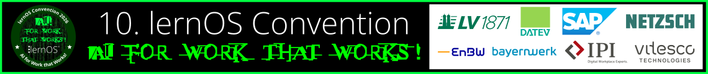
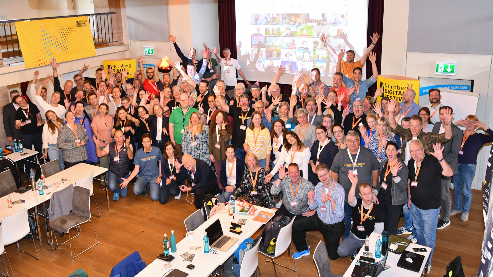
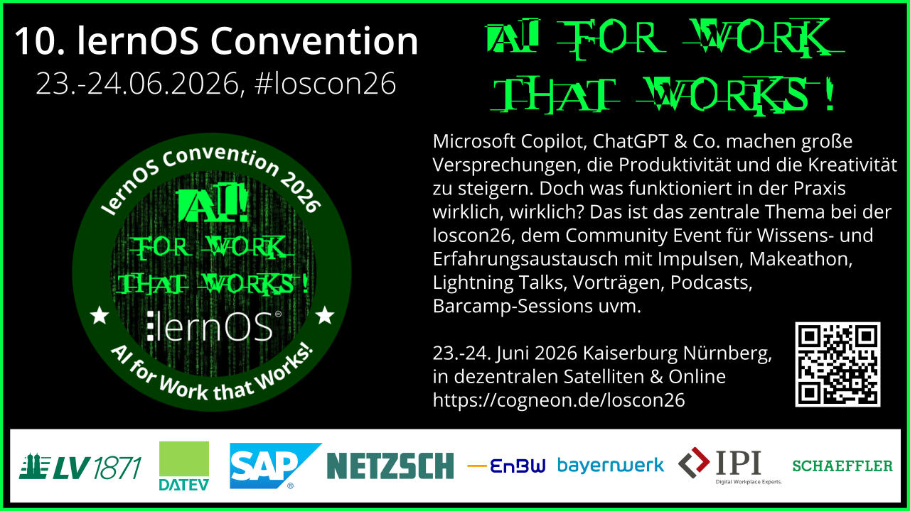

Willkommen zur lernOS Convention 2026 💚

Vom 23.-24. Juni 2026 findet die 10. lernOS Convention (#loscon26) auf der Kaiserburg Nürnberg, in dezentralen Lokationen und Online statt. Das Community-Event zu Wissensmanagement & Lernenden Organisationen steht dieses Mal unter dem Motto „AI for Work that Works!“. Auf den Infoseiten hier unter loscon.lernos.org findet ihr alle Infos.
Tickets Programm Vortragende Merch
Du kennst lernOS noch gar nicht? Mit lernOS lernst Du gemeinsam statt allein: flexibel, strukturiert und im Austausch mit Deiner Lerngruppe und Community. Lernpfade, Wochencalls und gegenseitiger Support helfen Dir, dranzubleiben und neue Perspektiven zu gewinnen. Die Community lebt von Offenheit, Wissensaustausch und aktiver Mitgestaltung. lernOS arbeitet agil mit adaptiven Lernzielen in 3-Monats-Sprints und fördert so systematisches Wissensmanagement und lebenslanges Lernen. Die lernOS Community entwickelt das Konzept kontinuierlich weiter – und trifft sich jährlich auf der lernOS Convention, der loscon.
Lass dir von Chatbot Suri helfen
Wenn du in den Infoseiten nicht navigieren oder suchen möchtest, frage einfach unseren Chatbot Suri rechts unten, der kennt die Infoseiten und das Programm 👇

Wichtige Termine
- ✅ 02.03.: Golive Landing Page, Ticket-Shop und Versand Einladung an loscon-Alumni
- ✅ 16.03.: Golive Call for Participation (Einreichung Programmvorschlägen bis Ende April)
- ✅ 11.05.: Programm Version 1.0 ist fertig 🎉
- 31.05.: Ende des AI Crowdsourcing 2026
- 17.06.: Vorab-Webkonferenz (13:05 - 13:55 Uhr)
- 22.06.: Vorabend-Treffen bei der Eröffnung des Nürnberg Digital Festivals
- 23.-24.06.: lernOS Convention 2026 🚀
